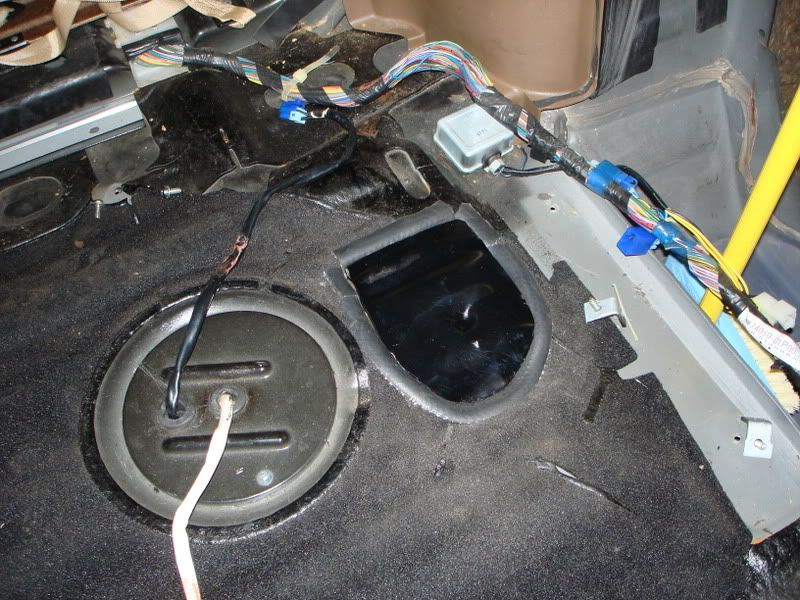

-
OK, I didn't see a write up on this when I went to do it, just a mention of it with a picture. So if this is redundant sorry.
If your fuel pump is dead, or you want to replace your fuel pump without dropping the tank here's the oh so simple way to do it.
Step 1: Remove the 6 screws (if I remember correctly) that hold down the plate covering a large portion of the rear hatch.
It takes some prying to get it to come up due to some sticky sound deadening material (at least I think it's sound deadening material).
Step 2: Scrape the outline for your cut. A small flat head screw driver worked the best for me.
Step 3: Cut a long your scrapped out lines, you have at least a 1/2" gap between the metal and the fuel lines. I used a Craftsman dremel style tool with a large cutting disk.
Step 4: Detach hoses, and unscrew the screws/bolts holding the fuel pump in.
Installation is the reverse of course.
I haven't made a cover for mine yet, but you could probably seal it well with some high temp silicone and just remount the top plate you took off in step 1. Obviously you can make this as simple or as complex as you want. It took me about 1 hour to cut it out doing exactly what I've posted above, but that was due to the Craftsman style dremel over heating. I got it about 1/2 way cut out then I had to throw it in the fridge, then freezer to get it to cool off enough to finish cutting the other half.
1984 NA to T Digi-Dash, Morgan's Cam Gears @ -3, Team Green Air Filter, Top Mount Intercooler, Turbo XS Boost Controller, Greddy Type RS BOV, CM 3" Down Pipe, NGK Iridium Spark Plugs, and Maxima E-Fans.
1984 NA 2+2 - New Project Solid Axle Rear - Former Best 1/4 mile 13.452 @105.77mph. -
This could come in handy. Some are probably going to think it's crazy to cut into your floor like that but it makes perfect sense to me. Nissan could have placed an access panel there. Did the plate go back down flat?
Looks like a well-stocked fridge too 8) -
BEAUTIFUL!!!
thanks to you I will have a fuel tank leak fixed! :twisted:1SIKZ31 -86 SlickTop- R.I.P. 03/01/10 … Parted out :-(
… New Project: LS1 Miata. Complete. 510whp. 2500lbs.
1 Month Away from Rear Mount 76 --> 650-700whp.


-
Yea, myself and Andrew did this a few months back. I posted the dimensions on where to cut the hole in a thread somewhere.
This is definately easier than dropping the tank.1987 300ZX Turbo - http://z31performance.com/forum/vie … php?t=3114
2001 Tiburon Turbo 60-1 270whp/268tq
No cupholders? Where am I gonna put my beer????
-
I'm going to grab the circular access panel from the 2+2 and cut my white Z's floor so I can put that panel down. Would look alot more professional than a hole in the floor.Feedback- viewtopic.php?f=18&t=19840

-
That's true, but the floor is not flat like it is above the fuel gauge unit, it's got ripples and a slope to it. You'd have to create a patch panel with a flat top, and then you'd be good to go. I'm thinking about doing the same thing, but it's not a priority at this time. Why Nissan didn't just do this to begin with makes no sense to me.1984 NA to T Digi-Dash, Morgan's Cam Gears @ -3, Team Green Air Filter, Top Mount Intercooler, Turbo XS Boost Controller, Greddy Type RS BOV, CM 3" Down Pipe, NGK Iridium Spark Plugs, and Maxima E-Fans.
1984 NA 2+2 - New Project Solid Axle Rear - Former Best 1/4 mile 13.452 @105.77mph. -
Yep, heres mine, i just used the piece and put some rubber hose around it. it seemed to seal it pretty well, and you cant even tell its there with that top plate on.
I hate wheel gap with a extreme passion

my build
viewtopic.php?t=2755
seller feedback
viewtopic.php?f=18&t=10430 -
Holy SHIT!Andrew84zx wrote: Yep, heres mine, i just used the piece and put some rubber hose around it. it seemed to seal it pretty well, and you cant even tell its there with that top plate on.
VERYYYYYYYYY Nice!!!1SIKZ31 -86 SlickTop- R.I.P. 03/01/10 … Parted out :-(
… New Project: LS1 Miata. Complete. 510whp. 2500lbs.
1 Month Away from Rear Mount 76 --> 650-700whp.
-
Has anyone tried installing the sending unit/fuel pump from a s12 se? It is an all in one unit and IIRC it has the same dimensions as our sending unit. Shiro Special # 981 Being assembled in my spare time Chromoly acquired!
Shiro Special # 981 Being assembled in my spare time Chromoly acquired!
Originally posted by BoostedMamma -
yes!!! I love the search button!
GREAT THREAD!!! -
I did this to mind because when I saw that the sending unit had its own hatch and the fuel pump was so close by I said well SCREW IT. That didnt make any sense. And figured what the heck! -
Z guy I knew flattened out the area a bit and rivoted something like this over the hole. Looked very clean!
CLICKY CLICKY
I'd consider doing it but I'm converting to an external pump instead. -
Couldn't you just take that one cover off thats above it, cut the hole and put some weather stripping there, then screw the other cover back on? :lol:- VG30DET (HE341) 86 300ZX - 1982 280ZX Turbo - Headered NA 1986 300ZX 2+2 - 2000 Xterra - -
The cover that's there is for the fuel level sender. There is no access to the fuel pump without making a hole or dropping the tank.michaelp wrote: Couldn't you just take that one cover off thats above it, cut the hole and put some weather stripping there, then screw the other cover back on? :lol: -
You mean the metal reinforcement plate, right? Because thats what I did, to seal it better.michaelp wrote: Couldn't you just take that one cover off thats above it, cut the hole and put some weather stripping there, then screw the other cover back on? :lol:

Copyright © 2006–. All rights reserved. Privacy Policy